R Packaging
Packaging and sharing your R code
About
In this slides I show you how to create a fairly simple R package with common contents such as:
- functions,
- documentation,
- tests,
- data
- vignettes,
- license,
- README
- ETC
I will also describe the anatomy of an R package, its mandatory ingredients, some optional components, and my opinionated recipe to build packages.
Example: package "average"
Example
- Our package consists of one function:
average() average()computes the average (i.e. mean) of a numeric vector
[1] 3Function average()
We’ll go through the creation of the package "average" so that you can:
4) Share it with others
Minimal Version
Every R package must have at least the following components
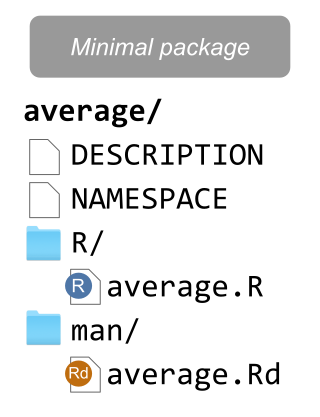
Without any of these, you won’t be able to create a valid package.
- DESCRIPTION (text file)
Package metadata. - NAMESPACE (text file)
Which functions are available to users. - R/ directory with R script files.
Files with functions. - man/ directory with Rd files.
Files with documentation of functions.
DESCRIPTION file
Package: average
Type: Package
Title: Computes average of numeric vector
Version: 0.1.0
Author: Gaston Sanchez
Maintainer: Gaston Sanchez <gaston@email.com>
Description: Toy package used for demo purposes.
License: MIT
Encoding: UTF-8
LazyData: true
DESCRIPTION is a text file—with no file extension—that follows a special type of format known as Debian Control File.1
DESCRIPTION file
You need to specify seven mandatory fields:
- Package
- Title
- Description
- Author
- Maintainer
- Version
- License
NAMESPACE file
In addition to DESCRIPTION, an R package also requires another mandatory text file called NAMESPACE.
- It controls how your package interacts with the rest of the R ecosystem
- Exports: It explicitly declares which functions, datasets, methods, and classes are public.
- Imports: It specifies which functions or full packages your code relies on internally
- Let
devtools::document()take care ofNAMESPACE(i.e. don’t edit by hand)
R file average.R
R file average.R with Roxygen comments
R file average.R with Roxygen comments
R file average.R with Roxygen comments
average.R
#' @title Average
#' @description Computes the average (i.e. mean)
#' @param x input vector
#' @param na.rm whether to remove missing values
average <- function(x, na.rm = FALSE) {
# decide whether to remove missing values
if (na.rm) {
x <- x[!is.na(x)]
}
# compute average
avg <- sum(x) / length(x)
return(avg)
}R file average.R with Roxygen comments
average.R
#' @title Average
#' @description Computes the average (i.e. mean)
#' @param x input vector
#' @param na.rm whether to remove missing values
#' @return computed mean
average <- function(x, na.rm = FALSE) {
# decide whether to remove missing values
if (na.rm) {
x <- x[!is.na(x)]
}
# compute average
avg <- sum(x) / length(x)
return(avg)
}R file average.R with Roxygen comments
average.R
#' @title Average
#' @description Computes the average (i.e. mean)
#' @param x input vector
#' @param na.rm whether to remove missing values
#' @return computed mean
#' @export
average <- function(x, na.rm = FALSE) {
# decide whether to remove missing values
if (na.rm) {
x <- x[!is.na(x)]
}
# compute average
avg <- sum(x) / length(x)
return(avg)
}R file average.R with Roxygen comments
average.R
#' @title Average
#' @description Computes the average (i.e. mean)
#' @param x input vector
#' @param na.rm whether to remove missing values
#' @return computed mean
#' @export
#' @examples
#' vec <- 1:5
#' average(vec)
#'
#' vec_na <- c(1, 2, NA, 4, 5)
#' average(vec_na)
#' average(vec_na, na.rm = TRUE)
average <- function(x, na.rm = FALSE) {
. . .
}Note: code of function average() hidden for clarity purposes
R file average.R with Roxygen comments
average.R
#' @title Average
#' @description Computes the average (i.e. mean)
#' @param x input vector
#' @param na.rm whether to remove missing values
#' @return computed mean
#' @export
#' @examples
#' vec <- 1:5
#' average(vec)
#'
#' vec_na <- c(1, 2, NA, 4, 5)
#' average(vec_na)
#' average(vec_na, na.rm = TRUE)The roxygen comments will be used to create the
Rd(R Documentation) files of theman/directory.Let
devtools::document()take care ofRdfiles.
Minimal file structure
You can create the minimal file structure of an R package by hand, e.g.
However, we recommend that you use functions from packages "devtools" and "usethis" to create and take care of the files and directories in an R package.
Packaging with "devtools" and "usethis"
About
I will describe one way to create some of the common elements of an R package, and also a development workflow to iterate through the packaging process.
Keep in mind that there are various ways to create an R package, and that you are not required to use "devtools" and friends.
But as you’ll see, these supporting packages are extremely helpful, and will take care of many of the important details, and “pain points” of packaging your code.
Step 1) create_package()
Instead of creating the file structure of an R package by hand, we’ll use
create_package()You have to invoke this function on R’s console, by passing the file path (location and name) of the package you want to create
Step 1) create_package()
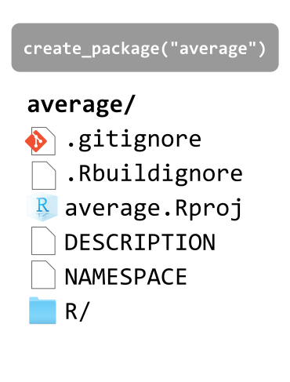
- .gitignore (text file)
List which files Git needs to ignore. - .Rbuildignore (text file)
List which files R needs to ignore. - average.Rproj (text file)
RStudio project file. - DESCRIPTION (text file)
Package metadata. - NAMESPACE (text file)
Which functions are available to users. - R/ directory for R script files.
DESCRIPTION file
When running create_package(), this is what DESCRIPTION will look like:
Package: average
Title: What the Package Does (One Line, Title Case)
Version: 0.0.0.9000
Authors@R:
person("First", "Last", , "first.last@example.com", role = c("aut", "cre"))
Description: What the package does (one paragraph).
License: `use_mit_license()`, `use_gpl3_license()` or friends to pick a
license
Encoding: UTF-8
Roxygen: list(markdown = TRUE)
RoxygenNote: 7.3.2You will need to edit the fields:
- Title
- Authors@R
- Description
- License (optionally you can run
use_xyz_license())
Step 1.1) Add R file average.R
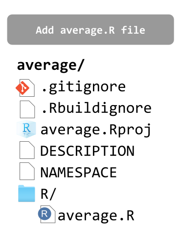
Inside R/, we’ll store the R file average.R contaning the Roxygen comments and the code of our function average()
Notice that there is no man/ directory yet. We’ll let devtools::document() to take care of it and its contents.
Step 1.2) Using functions from other packages
Sometimes you may need to use functions from other packages in your own package.
This requires declaring the other packages we need (i.e. our dependencies).
For example, if your package depends on functions from "dplyr" (or any other package) you need to run the following in R’s console: usethis::use_package("dplyr")
You will see some output like this
Step 2) devtools::document()
- The next step involves generating the
Rd(R Documentation) files. - These are the files that go inside the directory
man/. - This can be done by calling
devtools::document()in the R console.
Step 2) devtools::document()
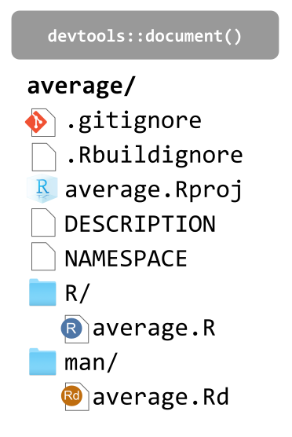
Calling devtools::document()—in the R console—does the following:
- This will create the
man/directory. - It will create the file
average.Rd
(from the Roxygen comments). - It will also update
NAMESPACE
Step 2.1) Run usethis::use_mit_license()
Every R package needs a license.
It’s recommended to choose a license by running—on R’s console—one of the "usethis" functions such as use_mit_license() or friends.
These functions not only update the content of DESCRIPTION but they also add a LICENSE file with the actual content of the chosen license.
Likewise, these functions put a copy of the full license in LICENSE.md (mainly for GitHub purposes) and add this file to .Rbuildignore
Step 2.2) Run usethis::use_git()
To make the average/ directory a Git repository, you can run the function usethis::use_git().
You will see some output like this
Tests
Step 3) Add tests/ with use_testthat()
- It’s best practice to include tests for your functions.
- In R, tests can be written with functions from the package
"testthat" - The starting point involves adding a
tests/directory by runningusethis::use_testthat()
You will see some output like this
usethis::use_testthat()
✔ Setting active project to
"/Users/gaston/average".
✔ Adding testthat to Suggests field in DESCRIPTION.
✔ Adding "3" to Config/testthat/edition.
✔ Creating tests/testthat/.
✔ Writing tests/testthat.R.
☐ Call usethis::use_test() to initialize a basic test file and open it for editing.Then follow the suggestion and run usethis::use_test("average")
Step 3.1) Unit Tests
After running usethis::use_test("average"), you need to edit the corresponding file test-average.R stored inside tests/testthat/.
test-average.R
File structure so far
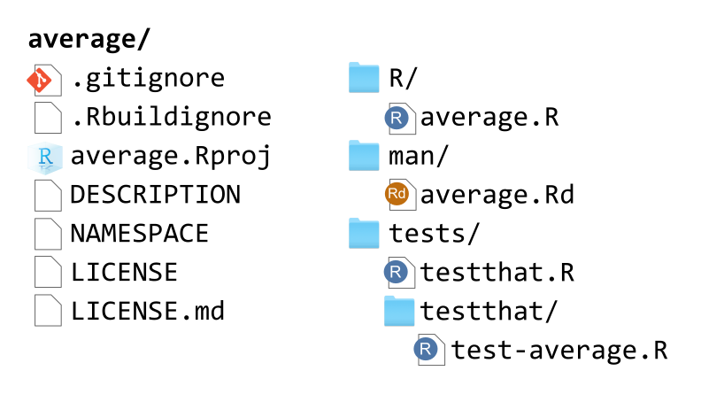
Adding Data to a Package
Data
- Sometimes you may want to include data in a package.
- Examples:
mpgdata in package"ggplot2"stormsdata in package"dplyr"penguinsdata in package"stat20data"
- BTW: some packages exist solely for the purpose of distributing data
- e.g.
"babynames","stat20data"
- e.g.
- If you want to store R objects and make them available to the user, put them in a directory
data/ - More info about data at: https://r-pkgs.org/data.html
Storing R objects in data/
- The most common location for package data is
data/. - We recommend that each file in this directory be an
.rdafile created bysave()containing a single R object, with the same name as the file. - The easiest way to achieve this is with
usethis::use_data().
Storing R objects in data/
- The snippet above creates
data/sample_vector.rda - It adds
LazyData: truein yourDESCRIPTIONfile. - This means that they won’t occupy any memory until you use them.
- This makes the object
sample_vectoravailable to users1 as:average::sample_vectorsample_vectorafter loading packagelibrary(average)
Documenting datasets
- Objects in
data/must be documented. - Documenting data is like documenting a function with a few minor differences.
- You document the name of the dataset and save it in
R/, e.g.
Documenting datasets: roxygen comments
There are two roxygen tags that are especially important for documenting datasets:
@formatgives an overview of the dataset.- For data frames, you should include a definition list that describes each variable.
- It’s usually a good idea to describe variables’ units here.
@sourceprovides details of where you got the data, often a URL.Never
@exporta data set.
Storing Raw Data
In addition to storing “clean” data in data/, you may want to store the script containing the code that generated the data.
In our example, it would be nice to store the code that generates sample_table and sample_vector
This is possible via usethis::use_data_raw()
Storing Raw Data
usethis::use_data_raw()creates a directorydata-raw/- This directory should be listed in
.Rbuildignore - The good news is that
usethis::use_data_raw()does this for you. - Running this command will give you an output like this:
- This will create a
samples.Rfile insidedata-raw/. - Here, we can store the commands that generate the sample objects.
Storing Raw Data in CSV files
Another common situation for storing data is when you have a dataset, (e.g. data in a CSV file), that you want to include in your package.
For instance, say we have some data about basketball players in a CSV file
basketball.csv.We need to store
basketball.csvinsidedata-raw/, and then update the code of the R filesamples.R
Storing Raw Data in CSV files
Assuming basketball.csv is stored in data-raw/, we edit samples.R as follows:
usethis::use_data(basketball) will create basketball.rda inside data/, and also the corresponding basketball.R inside R/ that needs to be edited (to include its documentation with Roxygen comments).
File structure so far
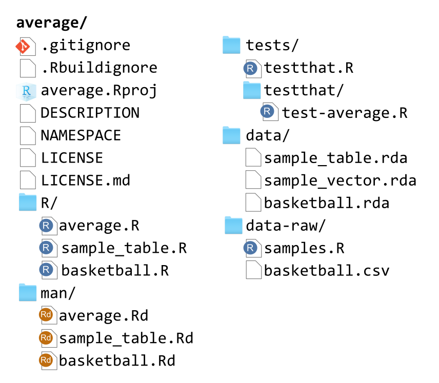
README file
Adding a README file
Since we are interested in sharing our package with others, we usually do this with GitHub.
As you know, a common practice is to include a
READMEfile.While this can be done by-hand, we recommend that you use
usethis::use_readme_rmd()use_readme_rmd()initializes a basic, executableREADME.Rmdready for you to edit:
Adding a README file
use_readme_rmd()initializes a basic, executableREADME.Rmdready for you to edit:It also adds some lines to
.Rbuildignore,README.Rmdalready has sections that prompt you to:- Describe the purpose of the package.
- Provide installation instructions.
- If a GitHub remote is detected when
use_readme_rmd()is called, this section is pre-filled with instructions on how to install from GitHub. - Show a bit of usage.
More info at: https://r-pkgs.org/whole-game.html#use_readme_rmd
Package States
Building An R Package
Now that we have most of the common elements of an R package, let’s talk about how the package-building process.
I will show the way I like to create my packages.
This means that you may find other useRs following different building strategies.
Package States
The creation process of an R package can be done in several ways. Depending on the modus operandi that you choose to follow, it is possible for a package to exist in five different states:
- Source
- Bundled
- Binary
- Installed
- In-memory
Package States
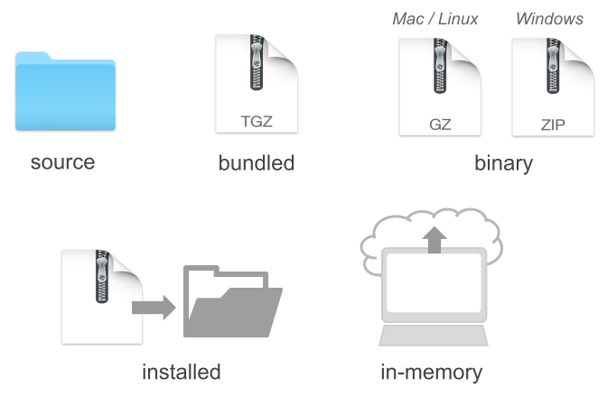
Source Package
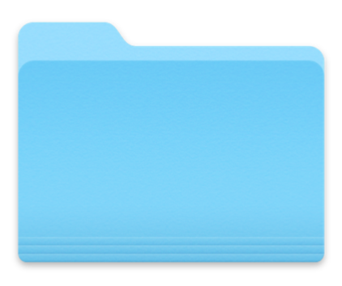
- The starting point is always a source package.
- This is basically the directory containing the subdirectories and files that form your package.
- I like to think of this state as a package in a raw stage.
- From a source package, you can transition to other states.
Source Package
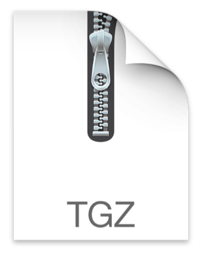
- The next immediate state (although not mandatory) is a bundled package.
- This involves wrapping the source package into a single compressed file.
- The compressed file has the extension
.tar.gz- A
.tar, short for Tape ARchive or tarball, is a standard format in the Unix/Linux environment. - A
.gzfile is simply the type of compression.
- A
Binary Package
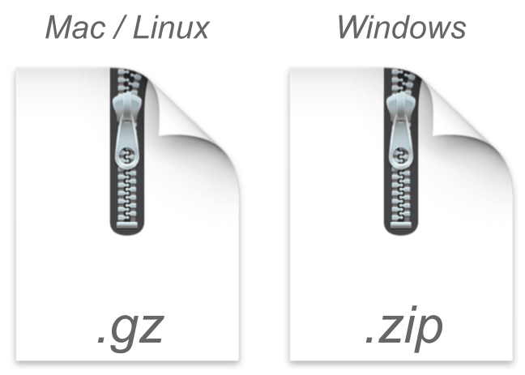
- A package in binary form is another type of state for a package.
- This is another type of compressed file that is platform specific.
- This depends on the operating system you are working with:
- Mac/Linux
- Windows
Installed Package
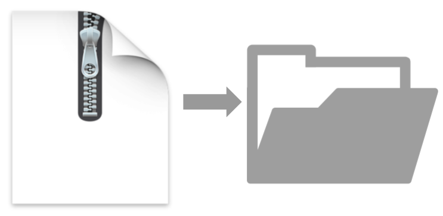
- An installed package is a decompressed binary file that has been unwarpped into an actual package library.
- Typically, it will located in the directory where other package libraries are stored.
In-memory Package
- Lastly, in order to use an installed package you need to load it into memory.
- This is done with the
library()function.
During the development of a package, you always start at the source level, and eventually make your way to an installed version.
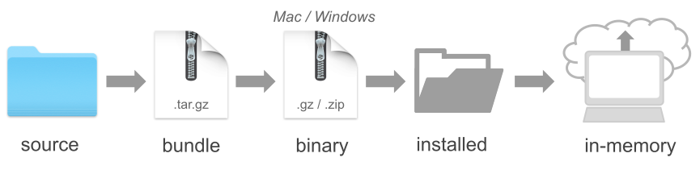
In theory, the building process would consist of the following flow:
source -> bundle -> binary -> installed —> in-memory
In practice, however, you can take some detours and shortcuts from source to installed.
Packaging Flow
Packaging Flow
A typical packaging workflow involves the following steps:
- Create Documentation
- Check Documentation
- Run Tests
- Build Bundle
- Install Package
- Check Package
Packaging Flow
A typical packaging workflow involves the following steps:
- Create Documentation:
devtools::document() - Check Documentation:
devtools::check_man() - Run Tests:
devtools::test() - Build Bundle:
devtools::build() - Install Package:
devtools::install() - Check Package:
devtools::check()
Create Documentation
When you change the roxygen comments of your functions, you will need to (re)generate the corresponding manual documentation.
This can be done with the function devtools::document() which generates the so-called .Rd (R documentation) files, located in the man/ directory.
Check Documentation
An optional, but strongly recommended, step after new documentation has been generated, is to check that it is correct.
This step becomes mandatory if you plan to share your package via CRAN.
To check that the .Rd files are okay, use the function
devtools::check_man() which inspects that the content and syntax of the .Rd files are correct.
Run Tests
If your package contains unit-tests (strongly suggested), included in the directory tests/, you can use the function devtools::test() to run such tests.
Build Bundle
If you just simply want to convert a package source into a single bundled file, you use the function devtools::build()
This function will create, by default, the .tar.gz file that in turn can be installed on any platform.
build() does not generate or check any documentation. It also does not run any tests.
Install
To install the package you can use devtools::install()
This function can install a source, bundle or a binary package.
After the installation is done, you should be able to load the package with library() in order to use its functions, and inspect its manual documentation.
Check
Optionally, you can carry out an integral check of the package with the function devtools::check()
This checking process is a comprehensive one, and it will verify pretty much every single detail.
This step also becomes mandatory if you plan to share your package via CRAN.
Optional devtools file
Unless you are constantly creating packages, you will very likely forget what functions to use for a specific purpose. One small hack that I tend to use is to include an auxiliary .R file in the source package, which I typically name as devtools-flow.R (or something like that) with the following content:
Optional devtools file
- You can think of
devtools-flow.Ras a cheat-sheet. - This file should be included in
.Rbuildignore. - Add a new line with the name of the file to
.Rbuildignore, and remember to anchor it with^and$. - Here’s what your
.Rbuildignorefile may look like: